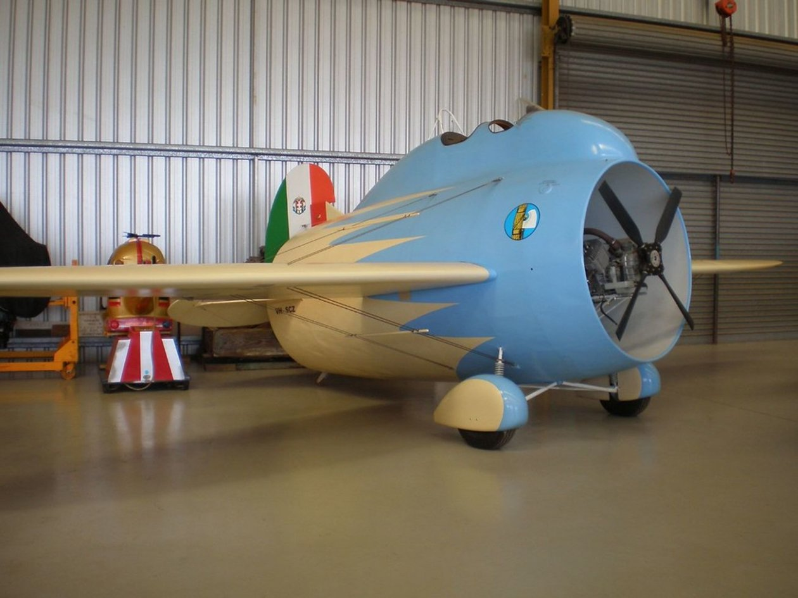

A renomada revista Airways apresentou uma lista dos 10 aviões mais raros (ou estranhos) que cruzaram os céus, destacando a notável evolução do design de aeronaves. Há os suspeitos raros de sempre: o Bleriot XI, o Boeing B-29, o Mitsubishi Zero, o Howard 500, o Cirrus VK30, o Lockheed PV-20 Harpoon e o Antonov An-225 Mriya. Mas para esta lista, vamos dar uma olhada em outros projetos estranhos de aeronaves, incluindo militares e experimentais, de todo o mundo.
O McDonnell XF-85 Goblin era um pequeno avião em forma de ovo com três estabilizadores verticais. O McDonnell XF-85 Goblin é um protótipo de avião de combate americano projetado pela McDonnell Aircraft durante a Segunda Guerra Mundial. Ele foi projetado para operar como um caça “parasita” a partir do compartimento de bombas do enorme bombardeiro Convair B-36. Era um pequeno avião a jato com uma fuselagem única em forma de ovo e um design de estabilizador de cauda bifurcada. Em 1948, protótipos foram criados e submetidos a rigorosos testes e avaliações. O XF-85 foi projetado para proteger bombardeiros contra aeronaves interceptadoras inimigas, um requisito que foi demonstrado durante a Segunda Guerra Mundial. A Força Aérea dos EUA (USAF) interrompeu o programa depois que McDonnell completou dois protótipos. O projeto era promissor para testes em voo, mas o desempenho da aeronave era inferior ao dos caças a jato que teria enfrentado em batalha, e o acoplamento se mostrou problemático. O XF-85 foi rapidamente arquivado e os protótipos foram confinados às coleções de museus.

Durante a Segunda Guerra Mundial, o Vought V-173 “Flying Pancake” (Panqueca Voadora) foi um avião de teste experimental criado como parte do programa Vought XF5U “Flying Flapjack”. Tanto o V-173 quanto o XF5U tinham um design incomum “all-wing” com fuselagens planas em forma de disco (daí o nome) que serviam como superfície de elevação. As hélices no bordo de ataque nas pontas das asas eram acionadas por motores de dois pistões escondidos na fuselagem. O V-173 fez seu primeiro voo em 23 de novembro de 1942, com o piloto-chefe de testes da Vought, Boone Guyton, nos controles. O último voo do V-173 foi em 31 de março de 1947. A noção de Zimmerman de um caça capaz de decolar e aterrissar quase na vertical foi validada em 131,8 horas de voo em 190 voos.

O Blohm & Voss BV 141 foi um avião de reconhecimento tático alemão que ficou conhecido por sua assimetria estrutural incomum durante a Segunda Guerra Mundial. Apesar de seu bom desempenho, o Blohm & Voss BV 141 nunca foi encomendado para produção em grande escala devido à falta do motor selecionado e à concorrência de outra aeronave de reconhecimento tático, o Focke-Wulf Fw 189. O piloto, observador e artilheiro traseiro foram colocados em uma gôndola de tripulação com vidro de plexiglas no lado de estibordo, semelhante ao visto no Fw 189, enquanto a fuselagem no lado de bombordo foi instalado o motor radial BMW 132N que ocupava o espaço até a cauda. A colocação do peso pareceu causar uma propensão a rolar na primeira inspeção; no entanto, o peso foi igualmente suportado pela sustentação das asas. A guinada gerada em combate foi um assunto mais complicado em termos de assimetria de empuxo versus arrasto. Foi determinado que ele foi aliviado principalmente em baixa velocidade devido a um fenômeno conhecido como fator P e, na velocidade padrão, foi prontamente controlado pela compensação.

O Stipa-Caproni, também conhecido como Caproni Stipa, foi um veículo experimental italiano desenvolvido em 1932 para o Ministério da Aeronáutica Italiano por Luigi Stipa. Para melhorar a eficiência do motor da aeronave, ele tinha uma fuselagem em forma de barril oco com o motor e a hélice dentro, agindo como um grande tubo Venturi e aumentando a sustentação em 37%. O Stipa-Caproni foi significativamente mais silencioso do que outros aviões do período. Infelizmente, o design da “hélice entubada” criou tanto arrasto aerodinâmico que os ganhos de eficiência do motor foram negados e a velocidade máxima da aeronave foi de apenas 131 km/h. O protótipo voou várias vezes dos aeroportos de Taliedo e Guidonia, era simples de operar, mas não era adequado para fabricação em série e foi esquecido. Este tipo, por outro lado, foi um passo significativo no desenvolvimento da propulsão a jato. As habilidades aprendidas com ele acabaram sendo usadas no projeto do Caproni Campini N-1, por exemplo.
O Douglas X-3 Stiletto foi um avião a jato experimental da década de 1950 construído pela Douglas Aircraft Company com uma fuselagem estreita e um nariz longo e cônico. Seu principal objetivo era analisar as características de projeto de um avião capaz de velocidades supersônicas sustentadas, o que incluiu o primeiro uso de titânio em componentes críticos da estrutura da aeronave. O Douglas X-3 Stiletto foi o mais elegante dos primeiros aviões experimentais, mas suas realizações científicas não foram as esperadas. O X-3 deveria atingir uma velocidade máxima de mais de 3.200 km/o, mas era terrivelmente fraco para o trabalho e não conseguia atingir Mach 1 em vôo nivelado. Apesar do fracasso da aeronave de pesquisa, os projetistas da Lockheed usaram dados dos experimentos X-3 para desenvolver o Lockheed F-104 Starfighter, um caça Mach 2 bem-sucedido com formato de asa trapezoidal.